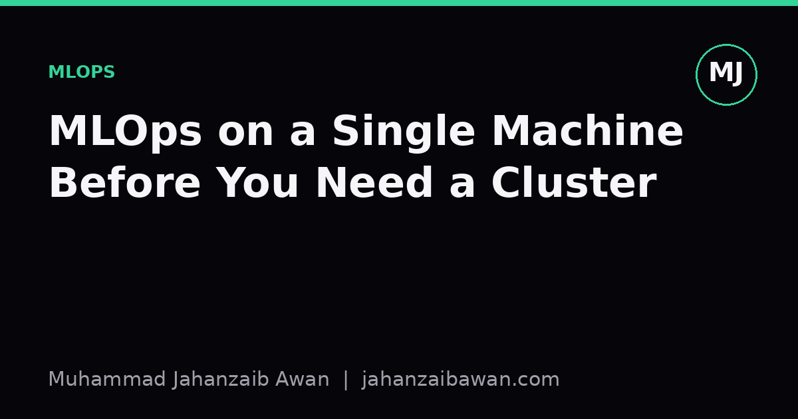

MLOps on a Single Machine Before You Need a Cluster
Most projects never outgrow one good machine. Here is what to build first, in the order it actually pays off.

The cluster is not your bottleneck
I have watched more projects get derailed by missing basics than by lacking compute. Someone reaches for Kubernetes and a feature store before they can reliably reproduce last week's training run. That ordering is backwards. A single well-organised machine, laptop or modest workstation, can carry a project a very long way, and the habits you build there transfer directly to any larger system later. The cluster adds throughput; it does not add rigour.
The honest test of an MLOps setup is not how many services it has. It is whether you can answer a simple question on demand: given this model file, can you tell me exactly which code, data and parameters produced it, and can you rebuild it from scratch. If the answer is no, you have a research notebook, not a system, regardless of how many YAML files are involved.
So before touching distributed training or orchestration platforms, there are four things worth building properly on one machine: version control that includes data, not just code; reproducible environments; experiment tracking; and a simple, automated pipeline. Each solves a specific failure mode I have seen repeatedly, and each is cheap to set up compared to the pain it prevents.
Version everything, including the data
Code version control is assumed at this point, but data and model versioning is where most small projects quietly rot. A typical failure looks like this: you train a model on a CSV, get a promising 0.81 F1 score, then two weeks later someone edits that same file to fix a labelling error. Now your old result is unreproducible, and you cannot tell whether a later drop to 0.76 is a real regression or just a different, better-labelled dataset.
The fix does not require anything exotic. A tool that tracks data and model artefacts alongside code, pointing to immutable storage rather than mutable files, is enough. The discipline matters more than the tool: every dataset snapshot and trained model gets a hash or tag, and that tag is recorded next to the metric it produced. On one machine this might just mean a local object store plus a manifest file; it does not need cloud infrastructure to be worthwhile.
The payoff is concrete. If a stakeholder asks why accuracy moved between two reports, you want to answer in minutes by diffing two manifests, not by reconstructing the week from memory and Slack messages. That single capability, cheap to build early, becomes very expensive to retrofit once a project has been running for months with no record of what went into which run.
Reproducible environments and honest tracking
The second failure mode is the environment drift problem: a model trained today with one set of library versions behaves differently, sometimes silently, when retrained six months later with newer versions of the same libraries. I have seen a change in a default regularisation parameter between library releases shift a reported metric by several points with no code change at all. Without a pinned environment, nobody notices until results stop matching.
A lockfile or container image pinning exact dependency versions, built and tested on the single machine from day one, closes this gap. It does not need to be elaborate; a Dockerfile with pinned versions and a requirements file checked into the same repository as the code is sufficient for most individual or small-team projects. The point is that the environment is itself a versioned artefact, exactly like the code and data.
Experiment tracking is the third piece, and it is the one people skip most often because spreadsheets feel adequate at first. They are not, because spreadsheets do not capture the full configuration automatically, and they decay as soon as someone forgets to fill in a row. A proper tracking tool logs hyperparameters, metrics, data version and environment version together, automatically, for every run. Imagine comparing thirty runs where learning rate, batch size and data snapshot all varied independently; without structured logging, finding the genuinely best configuration among that noise is close to impossible, and people end up trusting whichever run they remember best rather than the one the numbers actually support.
A simple pipeline, then stop
The final piece worth building before any cluster conversation is a pipeline that chains data preparation, training and evaluation into one repeatable sequence, triggered by a single command. This does not require an orchestration platform. A script, or a lightweight task runner, that enforces the same order of operations every time is enough, and crucially it should refuse to run evaluation on a model trained against a different data version than the one being reported against.
The value here is leakage prevention as much as convenience. A common and quietly damaging mistake is fitting a preprocessing step, such as scaling or imputation, on the full dataset before splitting into train and test. Metrics then look better than they should, because test-set information has leaked into the preprocessing step, and the gap only shows up once the model is used on genuinely new data and underperforms its reported numbers. A pipeline that fits transformations strictly inside the training fold, and is enforced in code rather than remembered by habit, removes this entire class of error.
With these four pieces, data versioning, pinned environments, experiment tracking and a leakage-aware pipeline, a single machine already behaves like a small, trustworthy system. Scaling to a cluster later becomes a matter of running the same pipeline on more data or more parallel jobs; it does not require rebuilding the discipline from scratch, because the discipline was never about scale in the first place. The uncomfortable truth is that most projects that fail at the cluster stage were already broken at the single-machine stage; the cluster just makes the failure bigger and harder to trace. Build the boring foundations first, and the infrastructure decisions that follow become far easier to get right.